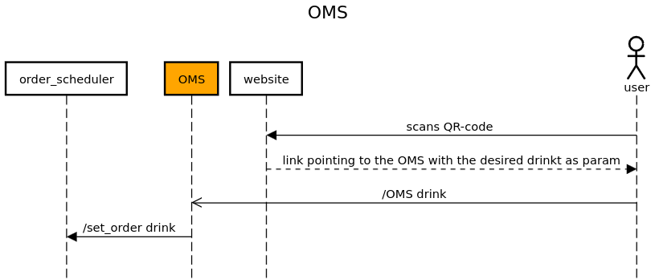

Order Management System¶
The
order_management_system(OMS) module is designed to provide a simple interface between the URLs behind each QR code displayed on the website and the order scheduler. The OMS provides a simple GET method which takes the arguements from the request, pareses them and then sends them to the order scheduler. The OMS then returns the response from the order scheduler to the user.The figure below shows the high-level architecture of the
order_management_systemmodule: Each QR code that can be scanned by the user translate to a get request pointing to the OMS with the drink type as a parameter.The
callback_schedulersupports a RESTful API implemented using Flask. See below for detailed documentation of its API endpoints and functionality.API Endpoints:
OMS
URL:
/OMS(configurable viaconf_oms.URL_SET)Method:
GETDescription: Retrieves and order through a GET request by its parameters. Extracts those and send them to the
order_scheduler. Returns the response from theorder_scheduler.
- Query Parameters:
drink: The type of drink to be prepared (e.g., “Gin Tonic”, “…”).Example request:
GET /order-management-system?drink=Gin Tonic/1.1 Host: example.comSuccess Response:
If an order is successfully placed:
HTTP/1.1 200 OK Content-Type: text/html Preparing Gin Tonic <br> Ordernumber 1Error Response:
If the drink parameter is missing or the request to the Order Scheduler fails:
HTTP/1.1 400 Bad Request Content-Type: text/plain Please specify a drink. # or "Failed to get a successful response"Module Implementation:
- order_management_system.oms()¶
This function is used to send a drink to the order scheduler by scanning a qr code first and then sending the drink to the order scheduler :return: A message that the drink is being prepared and the order number